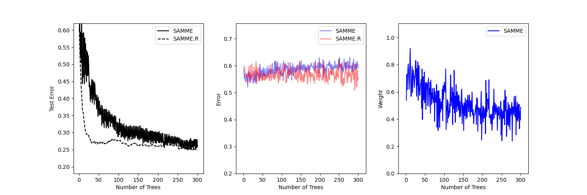

Note
Click here to download the full example code or to run this example in your browser via Binder
Multi-class AdaBoosted Decision Trees¶
This example reproduces Figure 1 of Zhu et al [1] and shows how boosting can improve prediction accuracy on a multi-class problem. The classification dataset is constructed by taking a ten-dimensional standard normal distribution and defining three classes separated by nested concentric ten-dimensional spheres such that roughly equal numbers of samples are in each class (quantiles of the \(\chi^2\) distribution).
The performance of the SAMME and SAMME.R [1] algorithms are compared. SAMME.R uses the probability estimates to update the additive model, while SAMME uses the classifications only. As the example illustrates, the SAMME.R algorithm typically converges faster than SAMME, achieving a lower test error with fewer boosting iterations. The error of each algorithm on the test set after each boosting iteration is shown on the left, the classification error on the test set of each tree is shown in the middle, and the boost weight of each tree is shown on the right. All trees have a weight of one in the SAMME.R algorithm and therefore are not shown.
# Author: Noel Dawe <noel.dawe@gmail.com>
#
# License: BSD 3 clause
import matplotlib.pyplot as plt
from sklearn.datasets import make_gaussian_quantiles
from sklearn.ensemble import AdaBoostClassifier
from sklearn.metrics import accuracy_score
from sklearn.tree import DecisionTreeClassifier
X, y = make_gaussian_quantiles(
n_samples=13000, n_features=10, n_classes=3, random_state=1
)
n_split = 3000
X_train, X_test = X[:n_split], X[n_split:]
y_train, y_test = y[:n_split], y[n_split:]
bdt_real = AdaBoostClassifier(
DecisionTreeClassifier(max_depth=2), n_estimators=300, learning_rate=1
)
bdt_discrete = AdaBoostClassifier(
DecisionTreeClassifier(max_depth=2),
n_estimators=300,
learning_rate=1.5,
algorithm="SAMME",
)
bdt_real.fit(X_train, y_train)
bdt_discrete.fit(X_train, y_train)
real_test_errors = []
discrete_test_errors = []
for real_test_predict, discrete_train_predict in zip(
bdt_real.staged_predict(X_test), bdt_discrete.staged_predict(X_test)
):
real_test_errors.append(1.0 - accuracy_score(real_test_predict, y_test))
discrete_test_errors.append(1.0 - accuracy_score(discrete_train_predict, y_test))
n_trees_discrete = len(bdt_discrete)
n_trees_real = len(bdt_real)
# Boosting might terminate early, but the following arrays are always
# n_estimators long. We crop them to the actual number of trees here:
discrete_estimator_errors = bdt_discrete.estimator_errors_[:n_trees_discrete]
real_estimator_errors = bdt_real.estimator_errors_[:n_trees_real]
discrete_estimator_weights = bdt_discrete.estimator_weights_[:n_trees_discrete]
plt.figure(figsize=(15, 5))
plt.subplot(131)
plt.plot(range(1, n_trees_discrete + 1), discrete_test_errors, c="black", label="SAMME")
plt.plot(
range(1, n_trees_real + 1),
real_test_errors,
c="black",
linestyle="dashed",
label="SAMME.R",
)
plt.legend()
plt.ylim(0.18, 0.62)
plt.ylabel("Test Error")
plt.xlabel("Number of Trees")
plt.subplot(132)
plt.plot(
range(1, n_trees_discrete + 1),
discrete_estimator_errors,
"b",
label="SAMME",
alpha=0.5,
)
plt.plot(
range(1, n_trees_real + 1), real_estimator_errors, "r", label="SAMME.R", alpha=0.5
)
plt.legend()
plt.ylabel("Error")
plt.xlabel("Number of Trees")
plt.ylim((0.2, max(real_estimator_errors.max(), discrete_estimator_errors.max()) * 1.2))
plt.xlim((-20, len(bdt_discrete) + 20))
plt.subplot(133)
plt.plot(range(1, n_trees_discrete + 1), discrete_estimator_weights, "b", label="SAMME")
plt.legend()
plt.ylabel("Weight")
plt.xlabel("Number of Trees")
plt.ylim((0, discrete_estimator_weights.max() * 1.2))
plt.xlim((-20, n_trees_discrete + 20))
# prevent overlapping y-axis labels
plt.subplots_adjust(wspace=0.25)
plt.show()
Total running time of the script: ( 0 minutes 6.530 seconds)